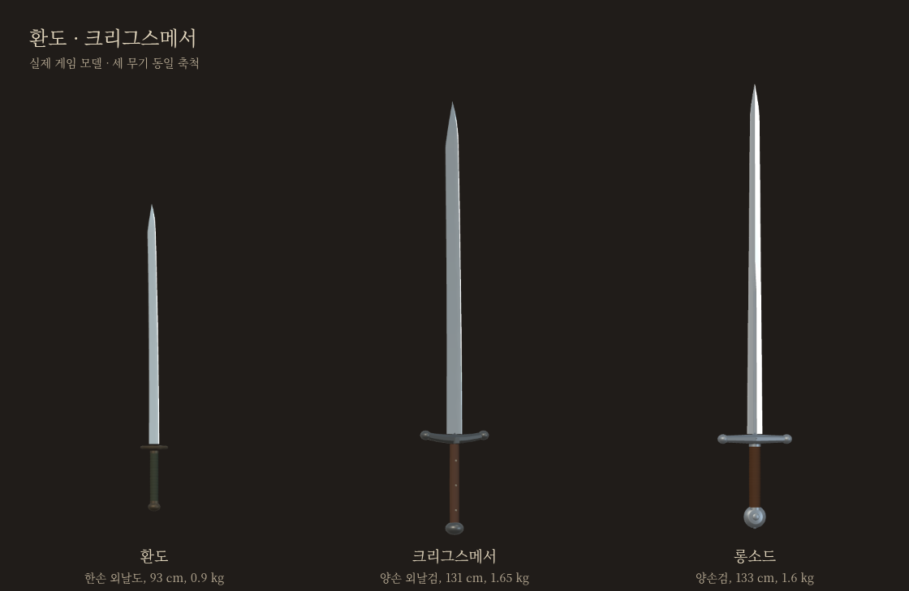
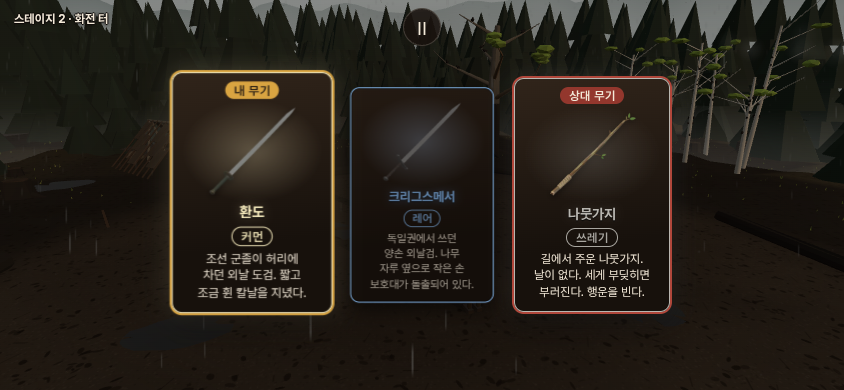
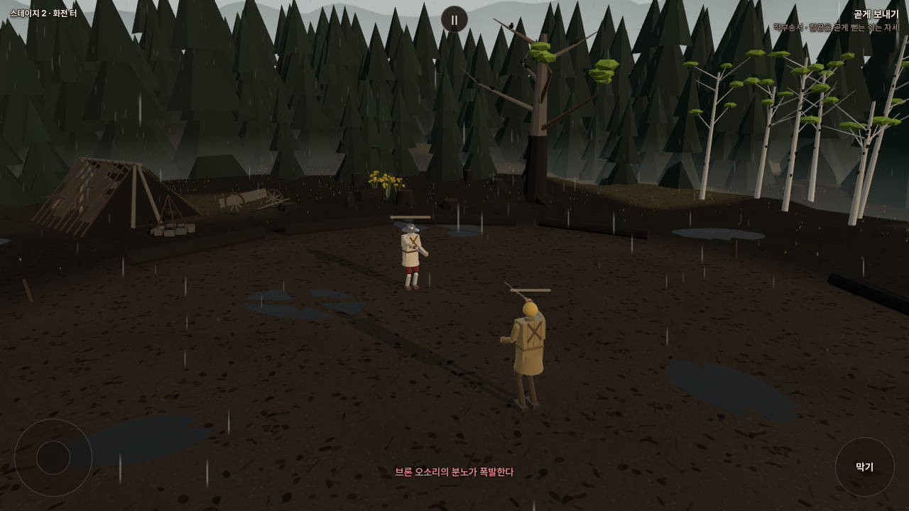

환도 · 크리그스메서
동방의 군용 외날도와, 롱소드에 가까운 독일 양손 외날검.

실제 게임 모델을 같은 축척으로 촬영했습니다. 치수는 게임용 조정값입니다.환도 · 동방 커먼
칼날 72cm · 전체 약93cm · 0.90kg. 조선 군졸이 허리에 차던 도검을 바탕으로 만들었습니다.
환도로 대련크리그스메서 · 독일 레어
칼날 100cm · 전체 약131cm · 1.65kg. 기존 롱소드보다 질량 약3%, 휘두르는 관성 약6%가 높습니다. 외날과 나무 자루, 옆으로 나온 작은 손 보호대가 특징입니다.
크리그스메서로 대련별도 검토판입니다. 상대는 나뭇가지를 든 브론이며, 여정 진행은 저장하지 않습니다.
기존 롱소드와 비교카드와 실제 장착 화면

